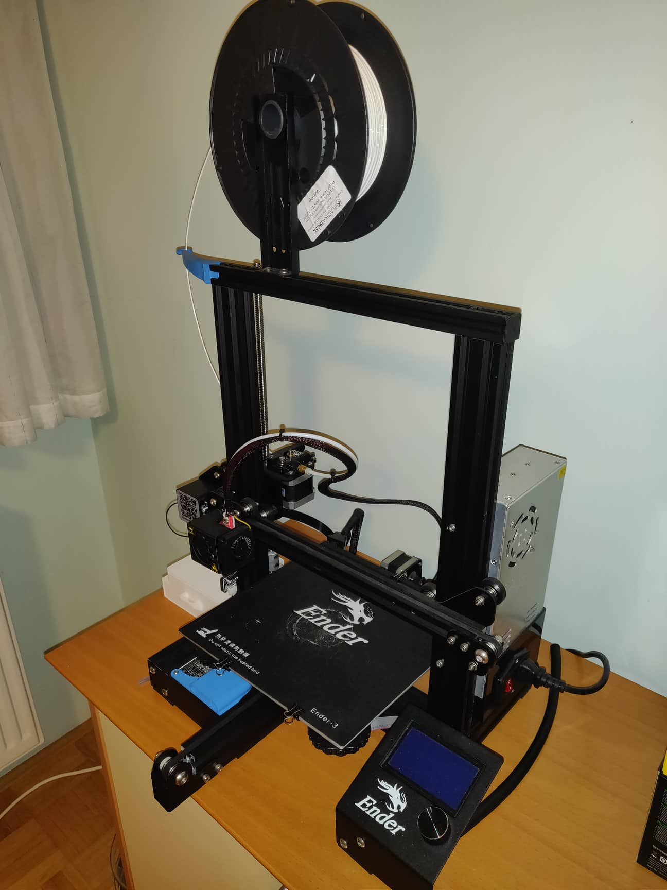
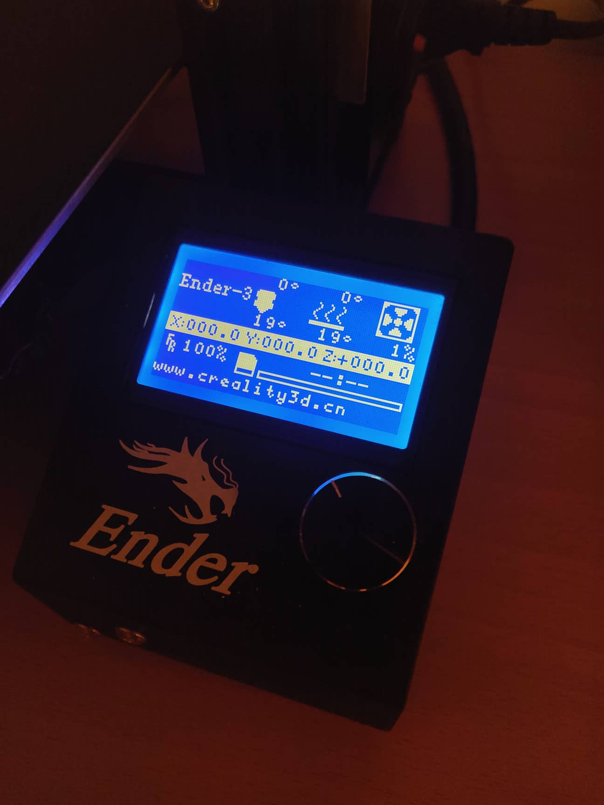

Medpredmetno povezovanje v osnovni šoli
V osnovni šoli imajo učenci obvezne in izbirne predmete, ter interesne dejavnosti. Obvezni predmeti so določeni z zakonom o osnovni šoli, izbirne predmete pa si učenec izbere sam. Po zakonu o osnovni šoli si mora učenec izbrati dva ali 3 izbirne predmete, od tega enega iz družbo-humanističnega sklopa in enega iz naravoslovno-tehničnega sklopa. Interesne dejavnosti ponudi šola, glede na zanimanje in so za učenca neobvezne.
Predmet tehnika in tehnologija je obvezni predmet in se poučuje v 6., 7. in 8. razredu. Predmet računalništvo pa je izbirni predmet in se poučuje v 7., 8. in 9. razredu. Predmeta tehnika in tehnologija ter računalništvo spadata v naravoslovno-tehnični sklop.
Tehnika in tehnologija
3D oblikovanje in vizualizacija sta pri pouku tehnike in tehnologije prisotna v vsebinskem sklopu Informacijska tehnologija, kjer učenci uporabljajo računalnik kot pripomoček za delo in učenje. S pomočjo grafičnega in pisnega komuniciranja izdelujejo tehnično in tehnološko dokumentacijo, ter samostojno izražajo svoje zamisli. Grafični orodji, ki ju uporabljajo pri pouku za risanje sta Slikar in CiciCAD. V 6. in 7. razredu je večju poudarek na 3D vizualizaciji, saj uporabljajo 3D modele za risanje 2D risb. V 8. razredu pa je prisotno tudi 3D oblikovanje, saj že oblikujejo 3D model s pomočjo grafičnega orodja CiciCAD.
Računalništvo
3D oblikovanje in vizualizacija sta pri pouku računalništva prisotna, saj velik del računalniške grafike temelji na 3D tehnologiji. Zmogljive grafične kartice (in posledično tudi vse strojne komponente) so posledica obdelave in vizualizacije 3D vsebin. Pri pouku računalništva so različne komponente 3D vizualizacije prisotne v velikem delu učnih vsebin. Komponent 3D oblikovanja pa pri pouku računalništva praktično ni. Grafična orodja, ki jih uporabljajo za risanje so: Slikar, PhotoFiltre, Gimp in OpenOffice Draw. 2D risbo 3D modela lahko narišemo z vsemi zgoraj navedenimi grafičnimi orodji, vendar z njimi ni mogoče manipuliranje in spreminjanje 3D modela. Predmet računalništvo je skozi tri leta razdeljen na tri izbirne predmete: Urejanje besedil v 7. razredu, Multimedija v 8. razredu in Računalniška omrežja v 9. razredu.
Medpredmetno povezovanje
Medpredmetno povezovanje je nastalo kot nova oblika dela, ki naj bi učence razbremenila, hkrati pa zagotovila bolj kakovostno in trajno znanje. S pomočjo predmetnih povezav naj bi otrok uvidel povezave med različnimi, a podobnimi sorodnimi vsebinami, postopki in procesi.
Potreba po programih za 3D modeliranje se je pojavila tako pri pouku tehnike in tehnologije kot računalništvu. Za risanje v programu potrebujemo dobro prostorsko predstavljivost, ki jo pridobimo pri pouku tehnike in tehnologije, ter hkrati poznavanje osnovnih zakonitosti z delom z računalnikom, ki jih pridobimo pri pouku računalništva. Sodobna šola zahteva uporabno znanje, za dosego le-tega pa je nujno izobraževanje, ki vključuje medpredmetno povezovanje različnih predmetov. Povezovanje tehnike in tehnologije ter računalništva, z uporabo programa za 3D oblikovanje in vizualizacijo, bi učencem omogočila da uvidijo v svojem znanju smiselnost, uporabnost in življenjskost.
 Vir: Aberšek, B., Dolenc, K., & Gerlič, I. Uporaba programa Google SketchUp za 3D oblikovanje in vizualizacijo v osnovni šoli